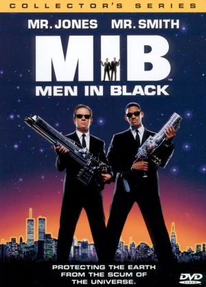

El Señor de los Anillos: La Comunidad del Anillo

Sinopsis
Un hobbit de la Comarca, Frodo Bolsón, recibe la misión de transportar el Anillo Único hasta el Monte del Destino para destruirlo y evitar que el Señor Oscuro Sauron domine la Tierra Media.
Personajes Principales
- Frodo Bolsón: El portador del Anillo.
- Aragorn: Heredero al trono de Gondor y montaraz del Norte.
- Gandalf el Gris: Un poderoso mago que guía a la Comunidad.
- Samagaz Gamyi: El leal amigo y compañero de Frodo.
¿Por qué es mi favorita?
Esta película destaca por su increíble ambientación, desarrollo de personajes y una banda sonora inolvidable. Muestra el valor de la amistad, la perseverancia y cómo incluso la persona más pequeña puede cambiar el curso del futuro.